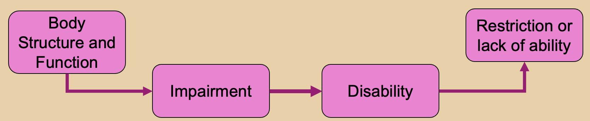
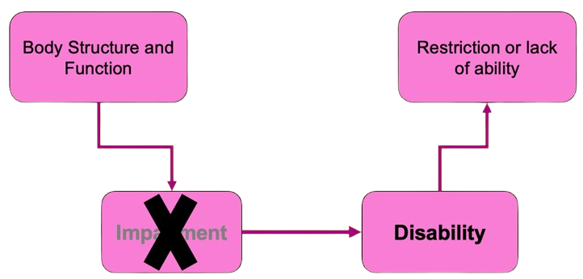
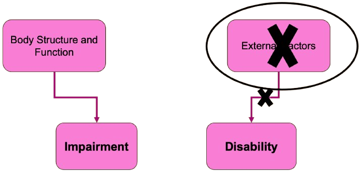
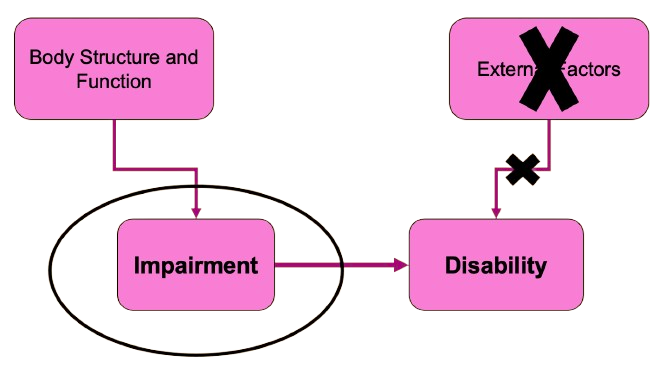
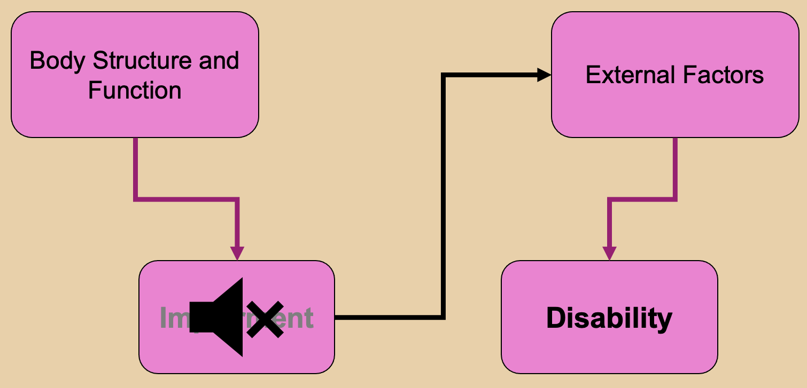
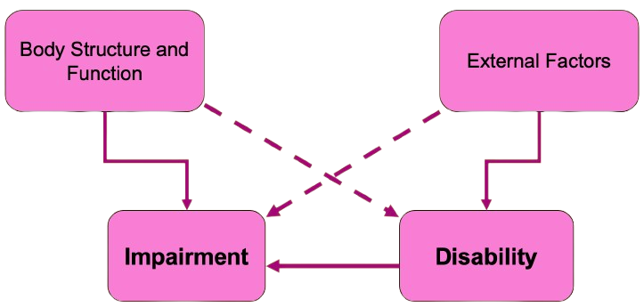

On this page I have summarized the text of Liz Crow: "including all of our lives". I have created several flowcharts to accompany the text.
About Liz Crow
Liz Crow is a Feminist and Activist in the disabled people‘s movement.
In the course of this she has created films, live performances and a lot more.
She is the author of “including all of our lives”, which is summarized on this page.
A brief background about Liz Crow: She became disabled when she was ten years old.
When she went to university she made first encounters with discrimination. She wanted to study medicine but was forced to leave.
That is when she began to question her identity and rights as a disabled person.
WHO Definitions
First, let's look at some definitions of the World Health Organisation (WHO):
Impairment
"In the context of health experience, an impairment is any loss or abnormality of psychological, physiological, or anatomical structure or function."
Disability
"In the context of health experience, a disability is any restriction or lack (resulting from an impairment) of ability to perform an activity in the manner or within the range considered normal for a human being."
In the following flowchart I have visualized the above mentioned definitions.

Models of Disability
There are different models of disability. We will look at the two most common ones.
Medical Model
In the medical model, the impairment and the functional limitation is the root cause of any disadvantage a person might encounter. This means that the focus of intervention is on the impairment of the individual. Thus the solution and full participation in society is found by medical treatment or cure.
- Impairment (functional limitation) is the root cause of any disadvantage
- Focus of intervention is impairment of individual
- Solution by finding treatment or cure
In our flowchart, the medical model would look like this: When the impairment disappears, the disability will go away as well.

Social Model
At some point in time (parts of) humanity realized that maybe, impairment should not be seen as a personal tragedy and that something else must be responsible for all the difficulties. In the social model of disability, the disability is the root cause of any disadvantage. This means, that the difficulties are created by external factors and barriers are constructed by society, not by the individual. The Disability is a limitation of opportunities as a result of discrimination, not because of the functional impairment.
- Not the Impairment, but the Disability is the root cause of any disadvantage
- Difficulties result from external factors
- Barriers are constructed by society
- Disability as limitation of opportunities as a result of discrimination
The Social Model could be modelled like the following. There is no longer a connection between impairment and disability, but the disability results solely from external factors. Without those barriers, disability would no longer exist.

Let's talk about impairment!
In the first moment, the social model was a great relief to many disabled people. However, it does have some flaws. By rejecting impairment as relevant, it cannot fully acknowledge the subjective reality of many disabled people‘s daily lives. Impairment can be problematic, even without external barriers. It can cause pain, illness, fatigue, shortened lifespan or other problems. This can still be unpleasant and difficult. Additionally, the rejection of medical and rehabilitation approaches has not been accompanied by exploration of what would be useful.

One other major problem is the tendency to avoid acknowledging the negative aspects of impairment, which means disability is often not presented as it truly exists in reality. This silence creates new taboos and barriers and can lead to the further exclusion of some people. When difficulties remain unspoken, important differences between people are also overlooked. Not everyone has the same ability or resources to cope, and ignoring these realities can even undermine the coping strategies people have developed. At the same time, many barriers remain unrecognized and therefore unaddressed if no one names or discusses them. As a result, meaningful political participation becomes nearly impossible. By focusing only on one side of the situation and avoiding the full complexity of disability, people with disabilities may unintentionally contribute to the processes that continue to disable them.

Redefining Impairment
There are three ways of impairment:
- Objective Concept: lacking all or part of a limb, or having a defective limb, organism or mechanism of the body (UPIAS 1976)
- Subjective experience: individual interpretation
- Social context: misinterpretation, social exclusion and discrimination
Impairment at its most basic level is purely objective and carries no intrinsic meaning.
It simply means that aspects of a person‘s body do not function or they function with difficulty.
The subjective way of impairment is based on the person's experience of it rather than on how non-disabled people define impairment.
The social context of impairment is the disabling part. Disability is often seen as a personal tragedy,
and this reflects the social context in which disability is interpreted.
People may assume that an impairment makes a person inferior, which can lead to misinterpretation, social exclusion, and discrimination.
However, ideas about what is normal or different change across cultures and over time.
In this view, disability is created through social interpretations and could therefore also be reduced or removed.
The goal is not only to reduce the number of people with impairments, but also the number of people who are perceived as impaired.
This may sound confusing, so here is an example for better understanding: Until not that long ago, homosexuality was seen as something that has to be cured.
Today, however, homosexuality is (luckily) no longer classified as a disease and our sense of normality has changed.
A Renewed Social Model of Disability
Given all that you might wonder, why the difficulties that come with impairments are commonly ignored.
The problem is, that today, we have not even fully "implemented" the social model yet. A lot of our
society is still built on the medical model views. Many people fear that we might lose all progress we have made,
if the individual impairments gain too much attention again.
Let's quickly summarize why the social model was recolutionary for many disabled people:
- Shift from personal tragedy to social oppression
- Focus on removing external barriers
- Disability rights and accessibility
- Problem of society instead of individual bodies
But still, neither the social nor the medical model could fully explain the lived daily experience of many people.
Both social barriers and the individual experience of impairment matter. Disability and Impairment interact in many ways:
The disability is highly dependent on the environment and can change without a change of impairment. A disability does not
necessarily worsen if appropriate resources are available for increased level of impairment. And a disability can even cause a new impairment:
an excessively steep or long ramp can for example lead to new pain.
